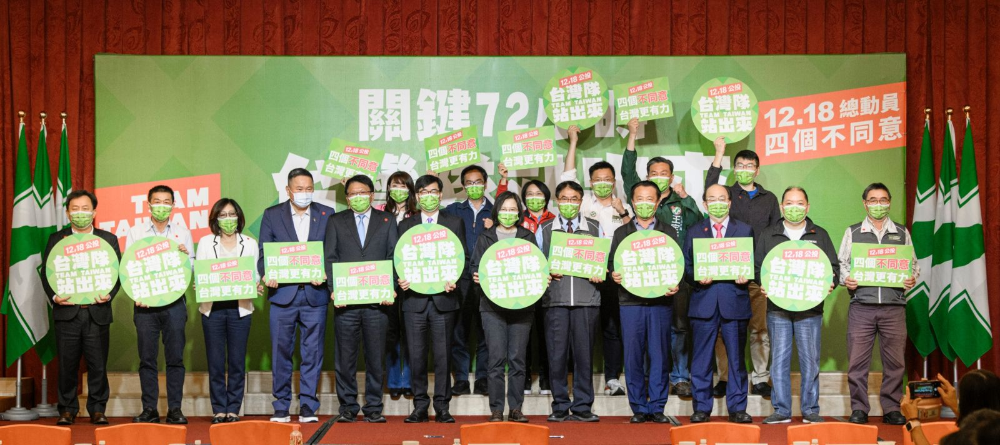

2021-12-15
行動中常會到高雄 蔡英文：週六公投無比重要，影響台灣空氣、用電、工作機會、甚至民主環境的選擇
公投倒數三日，民主進步黨今（15）日由蔡英文主席偕同全體中常委與黨務主管移師高雄舉行行動中常會，會中特別邀請嘉義縣長翁章梁、台南市長黃偉哲、高雄市長陳其邁、屏東縣長潘孟安，四位南部執政縣市首長與會，此外，立委劉世芳、李昆澤、趙天麟、許智傑及地方黨公職也都一同出席，向全國民眾，特別是中南部的民眾呼籲， 此次四項公投議題關乎整個台灣，請大家在12月18日投下「四個不同意」票。
會中首先請到高雄在地產業代表，航太廠董事長王先生致詞，他表示，如今的高雄，因環保與經濟共榮，不管是國內企業，還是國際廠商紛紛來高雄投資，因此，未來供電穩定非常關鍵，三接興建完成的話，不用南電北送，南部所發的電可以留在南部用，所以，他支持不同意「三接停建」。他也說，對於「反美豬進口」公投，因為他的公司屬航太產業，有許多技術證照必須取得美國授權，常與美國互動，他認為，若反美豬通過，恐會影響台美的關係，對於這次的公投，他呼籲高雄的鄉親可以投下「四個不同意」，讓高雄能持續發展。
隨後，高雄市長陳其邁也向中常會報告他擔任市長一年多來，高雄的進步與成績。陳其邁表示，從11月台積電宣布在高雄設廠後，這個月14日又有德商「台灣默克」決定加碼投資高雄，「正是高雄加速國際產業鏈重組的成果」，因為市府一項項解決廠商用水和用電的疑慮。他說，高雄未來會再興建四座再生水廠，五年內將增加43萬頓的水，「高雄不缺水，請企業放心投資，供水絕對沒有問題」。
而至於廠商最關心的用電問題，陳其邁強調，高雄不只供電還要減碳，已經訂定「減煤時間表」，希望2025年興達燃煤電廠能除役；他認為，北部用電得自己蓋第三天然氣接收站，「否則叫高雄燒煤，對南部地區來講很不公平，空氣品質也不好」，他拜託大家「不同意三接遷建，終結南電北送」，才能讓南部稍微喘息，用電更平衡。
嘉義縣長翁章梁表示，這次公投是台灣民主深化非常好的機會，因為公投跟大選分開。公投是在談台灣發展方向，這對台灣民主政治的發展，是一個非常重大的改變。翁章梁強調，這次公投比選縣長還重要，因為公投結果會改變台灣方向。這次公投的「四個不同意」總體來看是一個台灣外交戰爭、經貿戰爭、能源戰爭，我們要全力總動員，為台灣奮戰，讓台灣走出去、讓台灣更有力。
台南市長黃偉哲表示，這次公投不是政黨鬥爭，也不是政治上的你輸我贏，是影響台灣未來的走向。台灣未來掌握在我們手裡，在關鍵72小時，把握最後時間，讓更多民眾知道、瞭解，做最好的選擇，是關係台灣未來發展的投票。他也說，台南為了去核減煤，是全台灣第一個訂定低碳城市自治條例的城市，努力發展綠電，尤其是太陽能光電，總共裝置容量達到2.4GW，其中地面型有1.4GW，屋頂型有900MW。
屏東縣長潘孟安特別強調，屏東是農業大縣，台灣很多的農業是跟許多亞洲國家競爭，他舉例，台灣香蕉出口到日本要20-25%的關稅，但加入CPTPP的菲律賓香蕉出口到日本不用關稅。現在台灣豬肉口蹄疫拔針，已經可以外銷、具有競爭力，不能因為一個以食安為幌子的反美豬公投，影響台灣的國際信譽。
蔡英文主席致詞全文如下：
南部執政縣市的四位首長、各位中常委，謝謝產業界代表給我們的演講，現場還有在地黨部主委天麟、執評委、高雄市議員，大家好。
剛才，不論是產業界的代表，還是嘉義縣、台南市、高雄市、屏東縣的四位縣市長，都很清楚說明，南台灣的經濟，正在大步向前走。
我們今天所在的高雄，最近確實有不少好消息。台積電來了，美國、德國的高科技業者，也一個接著一個來投資。
過去我們不斷強調的「南台灣科技廊帶」，已經越來越完整。更重要的是，北部、中部、南部都有堅強的產業實力，台灣整體的經濟發展，就不會頭重腳輕，就能保持世界頂尖的競爭力。
當然，這一路走來，執政團隊真的是盡了全力在拚。地方首長都很努力招商，中央部會也全力支持，熱線電話24小時不間斷，包括總統都沒有不接電話的特權。今天我們把中常會拉到高雄舉行，就是要一起見證我們共同打拚的成果。
除了拚招商之外，要拚的還有一件事，那就是這星期六的公民投票。
公投跟台灣的發展有關，跟每一個人的生活有關，尤其跟南台灣的發展，南部鄉親的生活，也相關。
第一個關連，南台灣需要安全、穩定、環保的能源。
這樣，才能在經濟快速成長的階段，支撐起產業和民生的用電需求。
我知道，空污問題，南部的鄉親都非常關心，我們也一直在努力改善。
我們的策略和步驟很明確，在北部興建天然氣第三接收站，用燃氣取代燃煤發電，再搭配綠能，就能提供穩定的供電，也能改善南部的空污。
這一次，我要拜託大家，能夠告訴所有南部鄉親，請他們用他們的一票，共同改善空污問題。
第二個關連，南台灣的經濟，要持續接軌國際。
當外商紛紛來投資，當在地農產品、特別是我們感到驕傲的台灣豬肉，都要外銷到國際市場的時候，我們也要讓國際社會相信，台灣人做生意，是有原則、有信用、相信科學，更願意遵守國際標準。
所以，我們當然不能因為內部有一些不同意的意見，我們就放棄，還是要繼續努力，讓這個公投可以順利讓現在正在執行的政策可以繼續執行下去，也讓困擾三任總統的議題可以告一個段落。
第三個關連，南台灣的投資要落實，不能缺少穩定的民主環境。
請大家想一想，如果民粹凌駕民主，政策反反覆覆，外商還能放心投資台灣嗎？尤其是在南台灣進來的投資越來越多。
所以這星期六的公投，對南台灣非常重要，對每一位南部鄉親的生活，更是無比重要。這是一個關係到空氣、用電、工作機會、甚至民主環境的選擇。
今天在高雄，我特別要對南部的鄉親說，過去五年多來，謝謝大家相挺，讓我們能夠穩健執政，讓台灣在正確的方向上前進。
過去我們常說「好想贏韓國」，現在就是關鍵的時刻。台灣經濟成長率已經連續兩年贏韓國，也是亞洲四小龍第一。而依照IMF國際貨幣基金組織預測，只要台灣維持現在的成長速度，2025年，台灣人均GDP，將有機會超過韓國。
這次的公投，不但是政策的公投，更是對台灣經濟發展的選擇。如果你覺得台灣的經濟發展，現在是在正確的方向上，請大家投下四個不同意，讓台灣更有力。
最後關鍵的七十二小時，請大家一起站出來，一起呼籲身邊的親朋好友，用四個不同意，來延續南台灣的發展。用四個不同意，來讓台灣走出去。
謝謝大家。
